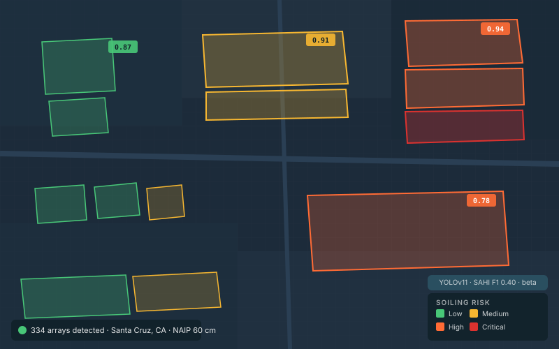
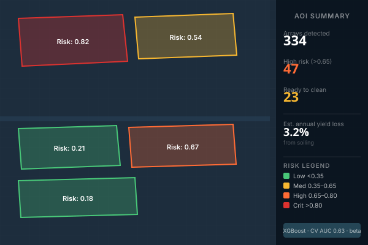

SolarSoiled uses computer-vision ML to detect every solar array in your service area and score each one for soiling risk — so you can clean smarter, not harder.
No hardware install • No flights required — built on public NAIP 60cm aerial imagery
Currently in early beta — detection accuracy and coverage are still improving.

Measured with sliced inference on NAIP Santa Cruz val set — the production metric, harder than mAP50. Beta gate is 0.55; GA gate is 0.65.
Spatial cross-validation on 1,000 NREL panel-years across 15 states. Spatial-CV gate cleared (≥0.70). Holdout-2022 AUC: 0.679 (target ≥0.70, in progress).
Backend API live on Render. Santa Cruz homeowner dashboard deployed on GitHub Pages with 334 scored arrays and three soiling models to compare.
Most operators rely on fixed cleaning schedules or costly soiling sensors. Both leave money on the table: you either clean too early or discover losses too late. There's no scalable way to see what's actually on your panels.
SolarSoiled pulls public NAIP 60cm aerial imagery for your AOI, runs a YOLOv11 segmentation model to detect every solar array, and scores each one for soiling risk using weather, land cover, and site context. No flights, no hardware — just an AOI and a refresh cadence.

Define a county, site, or bounding box. We pull the latest public NAIP 60cm aerial coverage automatically.
Our YOLOv11 model finds every array, then a risk model scores each one from weather and site context.
A georeferenced risk map highlights the highest-priority arrays for your cleaning crew.
Pull array polygons and per-array risk scores as GeoJSON or CSV, or fetch them via the beta API.
We identified the 50 highest-risk solar arrays in Santa Cruz County and built a full outreach loop: printed postcards mailed to each homeowner, a QR code linking to their personalized risk report, and an interactive dashboard where they can explore the data for themselves.
Each postcard shows the homeowner's specific array area, soiling risk score, estimated performance loss, and recommended cleaning window — generated automatically from the pipeline output.
One scan lands the homeowner on their array, auto-zoomed and highlighted on the map. They can adjust their last-cleaned date, recalculate risk live via the API, and see the energy and money saved by cleaning.
The dashboard lets users switch between our XGBoost ML model (CV AUC 0.728), the ENEL SOMOSclean physics model, and the Kimber 2007 linear PM2.5 model — seeing how three different scientific approaches assess the same array.
Pure client-side calculator: enter system size, electricity rate, and peak sun hours. The dashboard auto-fills estimated soiling loss from the array's risk score and shows annual kWh lost, annual dollar loss, and estimated recovery if cleaned.
Enter a bounding box and see soiling risk scores computed on real NAIP aerial imagery. Detection results are pre-computed for this demo AOI — the recommend and map steps run live.
Beta partners get the first three deliverables today. The cleaning recommendation engine is the next thing we’re shipping, and your feedback shapes how it works.
Georeferenced GeoJSON of every detected array in your AOI, with model version and confidence on every polygon.
A 0–1 soiling-risk score for each array from three models: XGBoost ML (CV AUC 0.728), SOMOSclean physics, and Kimber 2007.
REST API live at solarsoiled-api.onrender.com. Homeowner dashboard on GitHub Pages with 334 Santa Cruz arrays, map, calculator, and model switcher.
Rule-based /recommend-quick endpoint pairs risk scores with 7-day weather forecasts and your last-cleaned date to flag the optimal cleaning window.
Auto-generated 6"×4" PDF postcards per array, with soiling facts and a personalized QR code. Integrated with Lob.com for print-and-mail at ~$1.50/card.
Ranked outreach list combining detection confidence and soiling risk. Spatial join to parcel data for owner names and mailing addresses.
We're working with a small group of solar O&M operators and asset owners to refine soiling detection and cleaning recommendations against real fleets. In exchange for feedback and reported clean outcomes, design partners get free access during beta plus direct input on what ships next. Pricing comes after we’ve earned it.
Join the early-access program and get your first analysis free.
No credit card required • Beta onboarding via a 30-min intro call